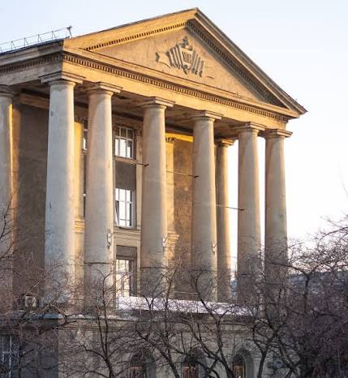
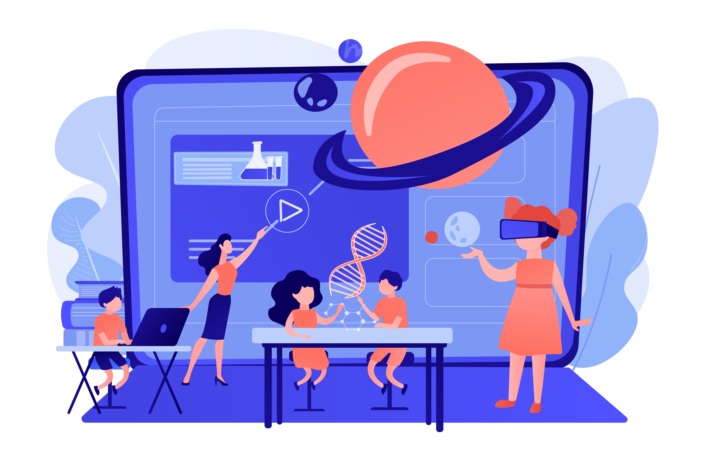

Кафедра технической физики
Одна из старейших и ведущих кафедр Физтеха, основанная в 1949 году. Здесь готовят специалистов для атомной отрасли и ведут исследования в области материаловедения и ядерной медицины.
О кафедре
Кафедра технической физики — это первая физическая кафедра на физико-техническом факультете УПИ (ныне УрФУ). Выпускники составляют значительную часть инженерно-технологических кадров атомной промышленности и высокотехнологичных компаний Урала.

Сегодня кафедра входит в состав крупнейшего учебно-научного комплекса УрФУ и сотрудничает с предприятиями Росатома, институтами УрО РАН и зарубежными университетами. На кафедре работают 32 преподавателя, среди которых 10 докторов и 17 кандидатов наук.
Наука и проекты
Научная деятельность охватывает широкий спектр направлений — от физики конденсированного состояния до ядерной медицины и радиационного материаловедения.
Ядерная медицина
На базе УрФУ создан Циклотронный центр ядерной медицины для производства радиофармпрепаратов и развития методов радиотерапии.
Материалы и нанотехнологии
Исследуются интерметаллидные сплавы титана для авиадвигателей и магнитные наночастицы для функциональных материалов.
Оптико-электронные системы
Разрабатываются оптико-электронные системы слежения для высокотехнологичных отраслей промышленности.

Образование
Кафедра ведёт подготовку по программам бакалавриата, специалитета и магистратуры. Студенты изучают микропроцессорную схемотехнику, физику конденсированного состояния и новые материалы.
Особое внимание уделяется практике: учащиеся с младших курсов вовлекаются в реальные научные проекты. Магистерские программы ориентированы на подготовку инженеров для Росатома и других высокотехнологичных компаний.
Студенческая жизнь и карьера
Физтех — это не только учёба, но и яркая внеучебная жизнь. Студенты участвуют в ежегодной конференции «Физика. Технологии. Инновации», где представляют свои разработки.
Выпускники успешно строят карьеру в науке, бизнесе и на производстве, работая на ключевых предприятиях атомной отрасли и в ведущих исследовательских центрах.